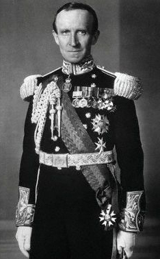
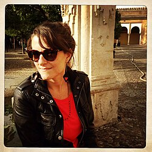
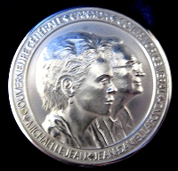

| Governor General's Awards | |
|---|---|
| Description | A collection of annual awards recognizing distinction in various fields |
| Country | Canada |
| Presented by | Governor General of Canada |
| Website | https://www.gg.ca/en/honours/governor-generals-awards, https://www.gg.ca/fr/distinctions/prix-du-gouverneur-general |
The Governor General's Awards are a collection of annual awards presented by the governor general of Canada, recognizing distinction in numerous academic, artistic, and social fields.
The first award was conceived and inaugurated in 1937 by the Lord Tweedsmuir,[4] a prolific writer of fiction and non-fiction; he created the Governor General's Literary Award with two award categories. Successive governors general have followed suit, establishing an award for whichever endeavour they personally found important. Only Adrienne Clarkson created three Governor General's Awards: the Governor General's Award in Visual and Media Arts, the Governor General's Northern Medal, and the Governor General's Medal in Architecture (though this was effectively a continuation of the Massey Medal, first established in 1950).
Governor General's Literary Awards
{kind=link}

Inaugurated in 1937 for 1936 publications in two categories, the Governor General's Literary Awards have become one of Canada's most prestigious prizes. Since 1987, there are fourteen awards:[5] nonfiction (English and French), fiction (English and French), poetry (English and French), drama (English and French), young people's literature – text (English and French), young people's literature – illustration (English and French), and translation (English-to-French and French-to-English). The program was created by the Lord Tweedsmuir, author of The Thirty-Nine Steps. Initially there were only awards for fiction and non-fiction books, and until 1959 the program honoured only English-language works (although the awards were occasionally won by English translations of works originally published in French).[5] The Stephen Leacock Award for humour literature, while administered separately from the Governor General's Awards and presented to the winners at a separate ceremony, made its initial announcements of award winners as part of the Governor General's Awards announcements in this era.[6][7][8]
In 1957, the awards were put under the administration of the Canada Council for the Arts and a cash prize began to be granted to the winner. By 1980, the council began to announce the finalists for the awards a month before they were presented, in order to attract more media attention, and, in 2007, the cash prize was increased to $25,000.
Prior to Adrienne Clarkson's time as governor general, the collection of Governor General's Literary Award-winning books at Rideau Hall was lacking more than 25 per cent of the full collection.[9] Clarkson made an effort to obtain from fairs and second hand shops the missing copies for the governor general's study and, when she left the viceregal office in 2005, the complete collection of winning books to date had been amassed.[9] It reached 552 books by late 2006[9] and was moved to Rideau Hall's library.[10] Today it forms the only complete collection of Governor General's Literary Award winners in existence.[9]
Categories
- Governor General's Award for English-language children's illustration
- Governor General's Award for French-language children's illustration
- Governor General's Award for English-language children's literature
- Governor General's Award for French-language children's literature
- Governor General's Award for English-language drama
- Governor General's Award for French-language drama
- Governor General's Award for English-language fiction
- Governor General's Award for French-language fiction
- Governor General's Award for English-language non-fiction
- Governor General's Award for French-language non-fiction
- Governor General's Award for English-language poetry
- Governor General's Award for French-language poetry
- Governor General's Award for English to French translation
- Governor General's Award for French to English translation
Governor General's Medals in Architecture
The Governor General's Medals in Architecture have been presented since 1982, continuing the tradition of the Massey Medals for Architecture, which had been awarded between 1950 and 1970. Up to twelve medals are awarded every two years, with no distinction among the medals awarded. The Royal Architectural Institute of Canada administers the competition.
Governor General's Awards in Commemoration of the Persons Case
The Governor General's Awards in Commemoration of the Persons Case have been presented since their creation by Governor General Edward Schreyer in 1979,[11] and honour the promotion of equality for girls and women in Canada. Five awards are given annually to candidates chosen from across the country, in addition to one award to a Canadian youth.[12] The awards are administered by Status of Women Canada and may be presented to persons of any gender; in 2008, Ben Barry became the first man to win the award.[11]
Governor General's Performing Arts Awards
{kind=link}
The Governor General's Performing Arts Awards are the foremost honours presented for excellence in the performing arts, in the categories of dance, classical music, popular music, film, broadcasting, and theatre. They were initiated in 1992 by Governor General Ray Hnatyshyn and the first recipients were William Hutt, Gweneth Lloyd, Dominique Michel, Mercedes Palomino, Oscar Peterson, Léopold Simoneau, Norman Jewison, and Gilles Maheu and CARBONE 14.[13] Initially, the award came with a $15,000 prize from the Canada Council; today's winners receive $25,000 and a medallion struck by the Royal Canadian Mint.[14] In addition, two complementary awards are given: The Ramon John Hnatyshyn Award for Voluntarism in the Performing Arts, recognizing the voluntary services to the performing arts by an individual or group, and the National Arts Centre Award, which recognizes an individual artist's or company's work during the past performance year. There is also a mentorship program that connects award recipients with artists in their early to mid-career.[14] Since 2008, the National Film Board of Canada has produced short films about each of the laureates, which are screened at the awards ceremony and streamed online.[15]
Governor General's History Awards
Governor General Roméo LeBlanc and Canada's National History Society created the Governor General's History Awards in 1996 to honour excellence in the teaching of Canadian history. The society then, working with other Canadian history organizations (including the Begbie Society, Canadian Historical Association, Canadian Museums Association, and Historica-Dominion Institute), expanded the scope of the awards beyond simply school teachers to include others who taught history in other ways and venues. There are now five specific awards within the Governor General's History Awards: the Governor General's History Awards for Excellence in Teaching, the Governor General's History Award for Scholarly Research (Sir John A. Macdonald Prize), the Governor General's History Award for Popular Media (Pierre Berton Award), the Governor General's History Award for Excellence in Museums, and the Governor General's History Awards for Excellence in Community Programming.[16]
Governor General's Awards in Visual and Media Arts
{kind=link}

The Governor General's Awards in Visual Arts and Media Arts were first presented in 2000. The Canada Council for the Arts funds and administers the awards.
Six prizes are awarded annually to visual and media artists for distinguished career achievement in fine arts (painting, drawing, photography, print-making and sculpture, including installation and other three-dimensional work), applied arts (architecture and fine crafts), independent film and video, or audio and new media. One prize is awarded annually for outstanding contributions to the visual or media arts in a volunteer or professional capacity. The value of each award is $15,000. An independent peer jury of senior visual and media arts professionals selects the winners.
Governor General's Award in Celebration of the Nation's Table
Conceived in 2006 by Jean-Daniel Lafond, husband of Governor General Michaëlle Jean, the Governor General's Award in Celebration of the Nation's Table was created to recognize Canadians—as individuals or in groups—who improved the "quality, variety and sustainability of all elements and ingredients of our nation's table".[17] Jean and Lafond consulted with many across Canada involved in the production of food products, as well as chefs, organizers of culinary festivals, sommeliers, and more.
The award has six categories: Creativity and Innovation, recognizing those who contributed original, forward-thinking ideas, products, or techniques related to food or drink; Education and Awareness, recognizing those who helped give a broader profile to the "nation's table"; Leadership, recognizing those who led others to form stronger communities connected to the food and beverage industries; Mentorship and Inspiration, recognizing role models in the food and beverage industries; Stewardship and Sustainability, recognizing those who were at the forefront of developing and/or practicing safeguards around the environment, food security, and health; and Youth, recognizing young Canadians who have demonstrated a potential to improve the quality, variety, awareness, and sustainability of the food and beverage industries.[17]
An advisory committee of food and beverage experts reviews nominations. Recipients receive a lapel pin and a framed certificate bearing the heraldic shield of the Governor General's Award in Celebration of the Nation's Table.[17]
Governor General's Innovation Awards
Governor General David Johnston created the Governor General's Innovation Awards in 2016 for Canadians who have created "exceptional and transformational Canadian innovations, which are creating a positive impact in Canada and beyond". These can have been developed in the public, private, or non-profit realms, but applicants must demonstrate the impact of their innovations; imapacts cannot be theoretical. The awards are also not intended for lifetime achievement.[18] Administered by the Rideau Hall Foundation (also established by Johnston), six awards are given annually; winners are selected on merit by a two-stage process.[19]
The Governor General's Innovation Awards receive both public and private financial support and are partnered with various organizations across Canada. The founding partners were the Office of the Secretary to the Governor General, the Rideau Hall Foundation, the Canada Foundation for Innovation, and the Canada Science and Technology Museums Corporation. The Globe and Mail is the outreach partner to the awards and Facebook is the digital partner.[20]
Other
{kind=link}

- The Governor General's Academic Medal
- The Governor General's Award for Safety in the Workplace
- The Governor General's Conservation Award
- The Governor General's Award for Debate; created in 1981 to award the top orator at the National Debating Seminar of Canada [21]
- The Governor General's Flight For Freedom Award for Lifetime Achievement in Literacy; created by Governor General Ray Hnatyshyn.[22]
- The Governor General's Fencing Award; created in 1965 by Governor General Georges Vanier[23]
- The Governor General's International Award for Canadian Studies; created in 1995 by Governor General Ray Hnatyshyn[22]
- The Governor General's Caring Canadian Award; created in 1995 by Governor General Roméo LeBlanc. It was restyled and added to the Canadian honours system as the Sovereign's Medal for Volunteers in 2015.[24]
- The Governor General's Northern Medal, created in 2005 by Governor General Adrienne Clarkson. It was restyled and added to the Canadian honours system as the Polar Medal in 2015.[25]
See also
References
- ^ About the John H. Meier, Jr. Governor General's Literary Award Collection, GG Awards, retrieved 30 March 2023
- ^ Office of the Governor General of Canada (26 October 2017), Awards in Arts, King's Printer for Canada, retrieved 30 March 2023
- ^ Heratige UofT, Governor General's Literary Award, University of Toronto, retrieved 30 March 2023
- ^ [1][2][3]
- ^ a b "Governor General's Literary Awards" Archived 2016-03-04 at the Wayback Machine [table of winners, 1936–1999]. online guide to writing in canada (track0.com/ogwc). Retrieved 2015-08-18.
- ^ "Prof. Lower's History Gets Vice-Regal Award". Winnipeg Tribune, April 19, 1947.
- ^ "Win Governor General's Awards in Annual Literary Contest". Ottawa Journal, June 11, 1949.
- ^ "Governor General's Awards Announced for Two Authors". Ottawa Journal, May 23, 1953.
- ^ a b c d Barrett, Maurie (October 2006). "The Great Hunt for Governor General's Literary Award Winners". Amphora (144). Vancouver: Alcuin Society. Archived from the original on 25 July 2008. Retrieved 23 February 2009.
- ^ Christie-Luff, Catherine; Clark, Catherine (2014). Rideau Hall – Inside Canada's House (Digital video). Ottawa: CPAC. Archived from the original on 2016-03-03.
- ^ a b Status of Women Canada (31 December 2008). "The Governor General's Awards in Commemoration of the Persons Case > Past Recipients". Queen's Printer for Canada. Archived from the original on 3 September 2010. Retrieved 23 April 2009.
- ^ Status of Women Canada (31 December 2008). "The Governor General's Awards in Commemoration of the Persons Case > Introductory Note". Queen's Printer for Canada. Archived from the original on 6 July 2009. Retrieved 23 April 2009.
- ^ "Governor General's Performing Arts Awards > Award Recipients". 4 May 2012. Archived from the original on 12 October 2013. Retrieved 31 July 2013.
- ^ a b "The Awards". Governor General's Performing Arts Awards Foundation. Archived from the original on 10 March 2009. Retrieved 23 April 2009.
- ^ "Short Films". Governor General's Performing Arts Awards Foundation. Archived from the original on 26 August 2011. Retrieved 9 November 2011.
- ^ Office of the Governor General of Canada (15 November 2013). "2013 Governor General's History Awards". Queen's Printer for Canada. Retrieved 19 November 2013.
- ^ a b c Office of the Governor General of Canada (23 June 2010). "Award in Celebration of the Nation's Table". Queen's Printer for Canada. Retrieved 2 July 2010.
- ^ Governor General's Innovation Awards > About, Governor General's Innovation Awards, retrieved 6 November 2023
- ^ Rideau Hall Foundation (16 April 2023), Inspirational Canadian Innovations being recognized for the Governor General's Innovation Awards, Cision, retrieved 6 November 2023
- ^ Governor General's Innovation Awards > Partners, Governor General's Innovation Awards, retrieved 6 November 2023
- ^ "Seminar History". Archived from the original on 2016-12-23. Retrieved 2016-12-23.
- ^ a b Office of the Governor General of Canada, Role and Responsibilities > Former Governors General > The Right Honourable Ramon John Hnatyshyn, Queen's Printer for Canada, retrieved 4 February 2010
- ^ Office of the Governor General of Canada. "History > Former Governors General > Canadian > Georges Philias Vanier". Queen's Printer for Canada. Retrieved 24 June 2015.
- ^ Office of the Governor General of Canada. "Governor General Announces the Creation of the Sovereign's Medal for Volunteers". Queen's Printer for Canada. Retrieved 15 July 2015.
- ^ Office of the Governor General of Canada. "Honours > Medals > Polar Medal". Queen's Printer for Canada. Retrieved 25 June 2015.
External links
- Governor General's Literary Awards: A Rare Book Collection of Fiction and Poetry (ggawards.ca)
- Governor General's Awards Archived 2009-10-16 at the Wayback Machine at the Governor General of Canada (gg.ca)
- Governor General's Literary Awards (ggbooks.ca)
- Governor General's Medals in Architecture Archived 2024-03-11 at the Wayback Machine
- Governor General's Awards in Visual and Media Arts at Canada Council
- Governor General's Performing Arts Awards (ggpaa.ca)
- Governor General's History Awards at Canada's History (canadashistory.ca)